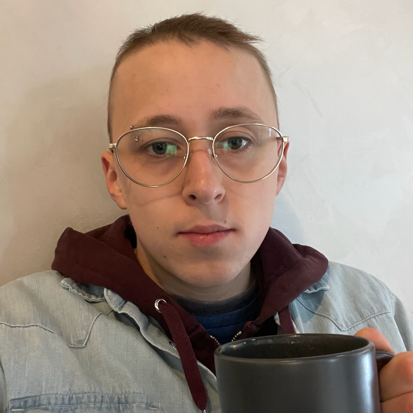

About Me
My name is Lucky Adams, I'm an artist and software developer living in Winnipeg, Manitoba. Explore my work by going to the Dev or the Art tab at the top of the page. In my career, I have developed video games, software, and automated test suites. I have also created 2D character art, 3D sculpts, and animations, among other things. I have 16 years of experience developing games and 4 years of experience working professionally in software development.
I am an ambassador for the Winnipeg Game Collective. My first self-published game is called Sea Birds: End of an Age. It released on Steam in 2019. My current (and most ambitious) project is a game called Single Feather.
I specialize in making cute indie games with rich movement mechanics.
Email: LuckyAdamsDev@gmail.com
